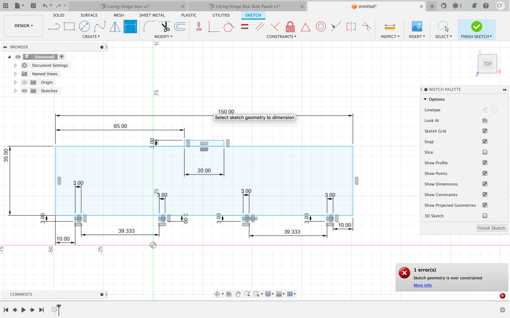
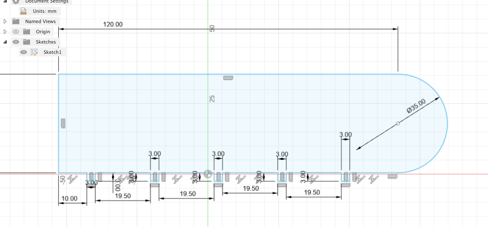
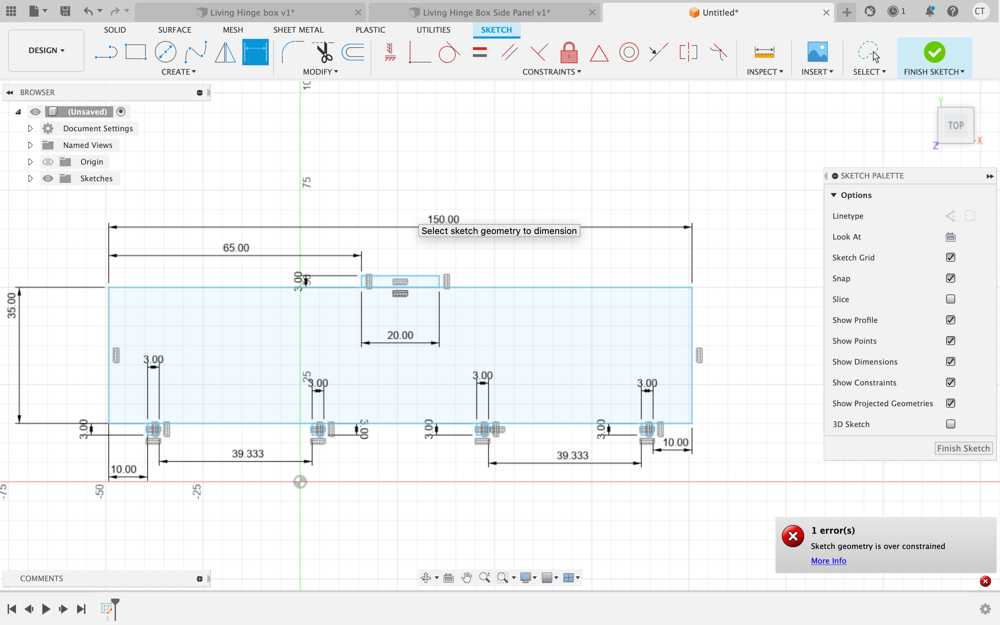
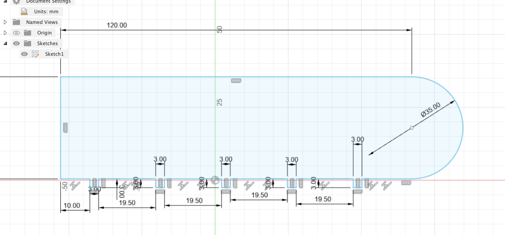
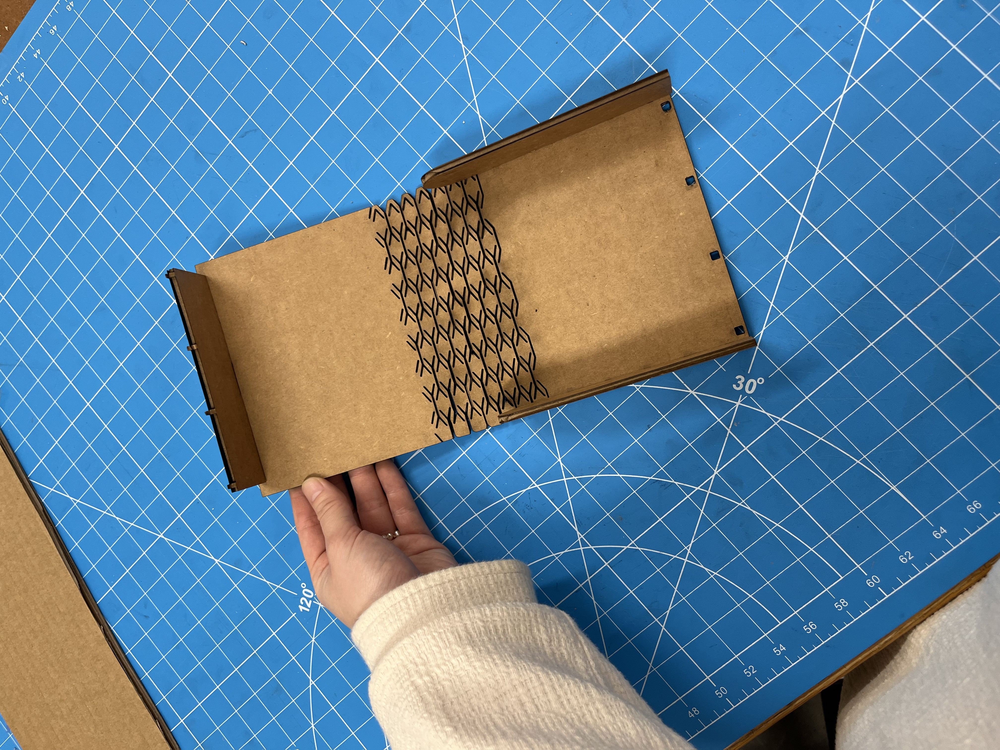
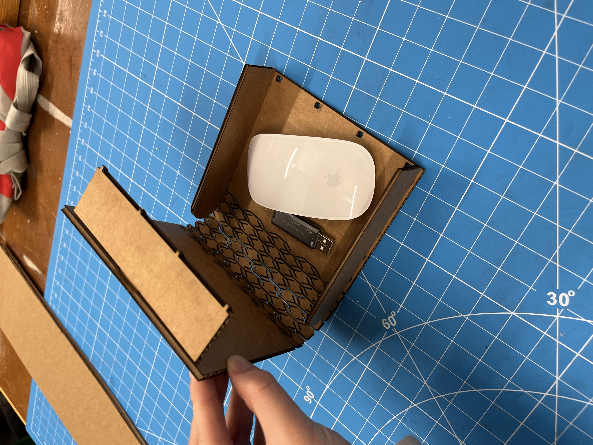
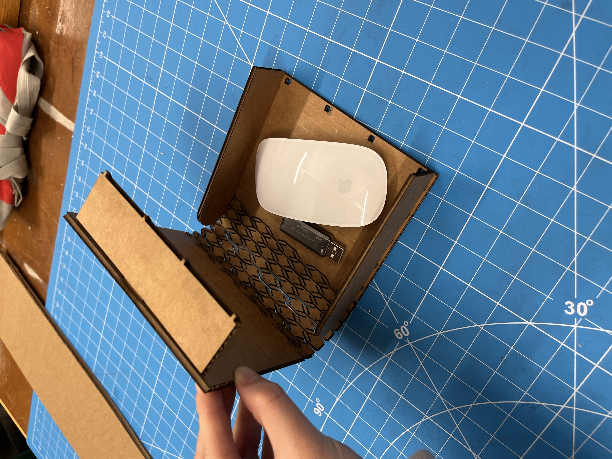
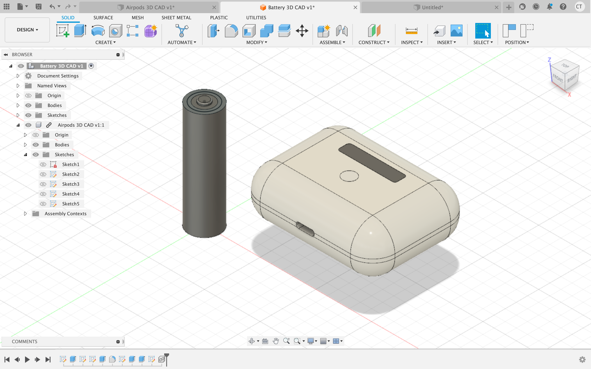
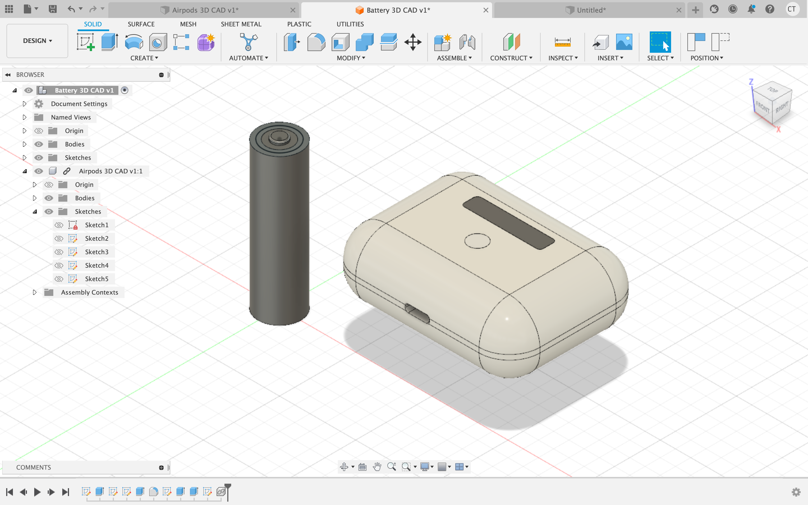

Press Fit Fusion 360 Design and Laser Cutting
When first starting to think about the press fit assignment, my interest was peaked by the living hinge concept. I really wanted a way to incorporate it into my design,
which would not only result in a cool product, but it would also enable me to learn how exactly to use the living hinge patterns within my designs.
I chose to go with a box that would have a living hinge and latch at the top. Here are my CAD designs:
 



I then ran the designs through the new laser cutter, which was a pretty convoluted process. Opening the file in inkscape, changing the colors and the stroke width, saving as a pdf, opening it Adobe Acrobat, and then finally sending it to the laser cutting software just added what felt like way more steps than necessary. From talking with Isa at Office hours, i gained the understanding that the new laser cutter is powerful, it just requires you to jump through all the loop holes in order to use it's own laser cutting software. Here is an image of the process of laser cutting:
After cutting all my pieces out, it was finally time to fit them together. I actually had to re cut many of my pieces because my measurements were just slightly off and the side panels wouldn't fit as nicely together as I wanted them to. Eventually, the pieces were able to slide in together and create a functional, cute box.

 

If I were to iterate on this design, I would change the front panel and the latching system. I think that the front panel was the worst fit of them all but due to time constraints, I was unable to cut another one. I would change it to make it a little wider and a little longer so that the lid of the box sits nicely on top.
 
